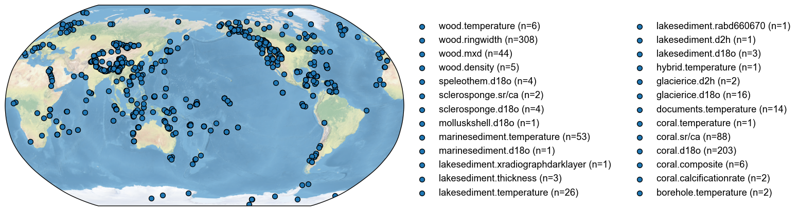

[2]:
import json
import requests
import pandas as pd
import io
import ast
import numpy as np
import pyleoclim as pyleo
import seaborn as sns
import cfr
[3]:
url = 'https://linkedearth.graphdb.mint.isi.edu/repositories/LiPDVerse-dynamic'
[10]:
query1 = """PREFIX le: <http://linked.earth/ontology#>
PREFIX le_var: <http://linked.earth/ontology/variables#>
PREFIX wgs84: <http://www.w3.org/2003/01/geo/wgs84_pos#>
PREFIX rdfs: <http://www.w3.org/2000/01/rdf-schema#>
SELECT DISTINCT ?dataSetName ?archiveType ?geo_meanLat ?geo_meanLon ?geo_meanElev
?paleoData_variableName ?paleoData_values ?paleoData_units
?paleoData_proxy ?paleoData_proxyGeneral ?time_variableName ?time_values
?time_units ?compilationName ?TSID where{
?ds a le:Dataset .
?ds le:hasName ?dataSetName .
OPTIONAL{
?ds le:hasArchiveType ?archiveTypeObj .
?archiveTypeObj rdfs:label ?archiveType .
}
?ds le:hasLocation ?loc .
OPTIONAL{?loc wgs84:lat ?geo_meanLat .}
OPTIONAL{?loc wgs84:long ?geo_meanLon .}
OPTIONAL {?loc wgs84:alt ?geo_meanElev .}
?ds le:hasPaleoData ?data .
?data le:hasMeasurementTable ?table .
?table le:hasVariable ?var .
?var le:hasName ?paleoData_variableName .
?var le:hasValues ?paleoData_values .
OPTIONAL{
?var le:hasUnits ?paleoData_unitsObj .
?paleoData_unitsObj rdfs:label ?paleoData_units .
}
OPTIONAL{
?var le:hasProxy ?paleoData_proxyObj .
?paleoData_proxyObj rdfs:label ?paleoData_proxy .
}
OPTIONAL{
?var le:hasProxyGeneral ?paleoData_proxyGeneralObj .
?paleoData_proxyGeneralObj rdfs:label ?paleoData_proxyGeneral .
}
?var le:partOfCompilation ?compilation .
?compilation le:hasName ?compilationName .
VALUES ?compilationName {"iso2k" "Pages2kTemperature"} .
?var le:useInGlobalTemperatureAnalysis True .
OPTIONAL{
?var le:hasVariableId ?TSID
} .
?table le:hasVariable ?timevar .
?timevar le:hasName ?time_variableName .
?timevar le:hasStandardVariable le_var:year .
?timevar le:hasValues ?time_values .
OPTIONAL{
?timevar le:hasUnits ?time_unitsObj .
?time_unitsObj rdfs:label ?time_units .
}
}"""
response = requests.post(url, data = {'query': query1})
data = io.StringIO(response.text)
df1 = pd.read_csv(data, sep=",")
[11]:
query2 = """PREFIX le: <http://linked.earth/ontology#>
PREFIX le_var: <http://linked.earth/ontology/variables#>
PREFIX wgs84: <http://www.w3.org/2003/01/geo/wgs84_pos#>
PREFIX rdfs: <http://www.w3.org/2000/01/rdf-schema#>
SELECT DISTINCT ?dataSetName ?archiveType ?geo_meanLat ?geo_meanLon ?geo_meanElev
?paleoData_variableName ?paleoData_values ?paleoData_units
?paleoData_proxy ?paleoData_proxyGeneral ?time_variableName ?time_values
?time_units ?compilationName ?TSID where{
?ds a le:Dataset .
?ds le:hasName ?dataSetName .
OPTIONAL{
?ds le:hasArchiveType ?archiveTypeObj .
?archiveTypeObj rdfs:label ?archiveType .
}
?ds le:hasLocation ?loc .
OPTIONAL{?loc wgs84:lat ?geo_meanLat .}
OPTIONAL{?loc wgs84:long ?geo_meanLon .}
OPTIONAL {?loc wgs84:alt ?geo_meanElev .}
?ds le:hasPaleoData ?data .
?data le:hasMeasurementTable ?table .
?table le:hasVariable ?var .
?var le:hasName ?paleoData_variableName .
?var le:hasValues ?paleoData_values .
OPTIONAL{
?var le:hasUnits ?paleoData_unitsObj .
?paleoData_unitsObj rdfs:label ?paleoData_units .
}
OPTIONAL{
?var le:hasProxy ?paleoData_proxyObj .
?paleoData_proxyObj rdfs:label ?paleoData_proxy .
}
OPTIONAL{
?var le:hasProxyGeneral ?paleoData_proxyGeneralObj .
?paleoData_proxyGeneralObj rdfs:label ?paleoData_proxyGeneral .
}
?var le:partOfCompilation ?compilation .
?compilation le:hasName ?compilationName .
VALUES ?compilationName {"CoralHydro2k"} .
OPTIONAL{
?var le:hasVariableId ?TSID
} .
?table le:hasVariable ?timevar .
?timevar le:hasName ?time_variableName .
?timevar le:hasStandardVariable le_var:year .
?timevar le:hasValues ?time_values .
OPTIONAL{
?timevar le:hasUnits ?time_unitsObj .
?time_unitsObj rdfs:label ?time_units .
}
}"""
response = requests.post(url, data = {'query': query2})
data = io.StringIO(response.text)
df2 = pd.read_csv(data, sep=",")
[12]:
df = pd.concat([df1, df2])
df
[12]:
| dataSetName | archiveType | geo_meanLat | geo_meanLon | geo_meanElev | paleoData_variableName | paleoData_values | paleoData_units | paleoData_proxy | paleoData_proxyGeneral | time_variableName | time_values | time_units | compilationName | TSID | |
|---|---|---|---|---|---|---|---|---|---|---|---|---|---|---|---|
| 0 | LS16STCL | Lake sediment | 50.8300 | -116.3900 | 1126.0 | d18O | [-7.81, -5.91, -9.03, -5.35, -5.61, -5.98, -5.... | permil | d18O | NaN | year | [2009.0, 2008.3, 2007.8, 2007.4, 2007.0, 2006.... | yr AD | iso2k | LPD7dc5b9ba |
| 1 | CO00URMA | Coral | 0.9330 | 173.0000 | 6.0 | d18O | [-4.8011, -4.725, -4.6994, -4.86, -5.0886, -5.... | permil | d18O | NaN | year | [1994.5, 1994.33, 1994.17, 1994.0, 1993.83, 19... | yr AD | iso2k | Ocean2kHR_177 |
| 2 | CO05KUBE | Coral | 32.4670 | -64.7000 | -12.0 | d18O | [-4.15, -3.66, -3.69, -4.07, -3.95, -4.12, -3.... | permil | d18O | NaN | year | [1983.21, 1983.13, 1983.04, 1982.96, 1982.88, ... | yr AD | iso2k | Ocean2kHR_105 |
| 3 | IC13THQU | Glacier ice | -13.9333 | -70.8333 | 5670.0 | d18O | [-18.5905, -16.3244, -16.2324, -17.0112, -18.6... | permil | d18O | NaN | year | [2009, 2008, 2007, 2006, 2005, 2004, 2003, 200... | yr AD | iso2k | SAm_035 |
| 4 | CO01TUNG | Coral | -5.2170 | 145.8170 | -3.0 | d18O | [-4.875, -4.981, -5.166, -5.06, -4.942, -4.919... | permil | d18O | NaN | year | [1993.042, 1992.792, 1992.542, 1992.292, 1992.... | yr AD | iso2k | Ocean2kHR_141 |
| ... | ... | ... | ... | ... | ... | ... | ... | ... | ... | ... | ... | ... | ... | ... | ... |
| 247 | ZI08MAY01 | Coral | -12.6500 | 45.1000 | -2.0 | d18O | [-4.65, -4.865, -4.883334, -5.02, -4.98, -4.84... | permil | NaN | NaN | year | [1881.6247, 1881.791367, 1881.958033, 1882.124... | yr AD | CoralHydro2k | ZI08MAY01_d18O |
| 248 | ZI08MAY01 | Coral | -12.6500 | 45.1000 | -2.0 | SrCa | [8.947578, 8.797017, 8.784511, 8.751525, 8.778... | mmol/mol | NaN | NaN | year | [1881.6247, 1881.791367, 1881.958033, 1882.124... | yr AD | CoralHydro2k | ZI08MAY01_SrCa |
| 249 | LI06FIJ01 | Coral | -16.8200 | 179.2300 | -10.0 | d18O | [-4.6922, -4.6266, -4.6018, -4.5486, -4.6102, ... | permil | NaN | NaN | year | [1617.5, 1618.5, 1619.5, 1620.5, 1621.5, 1622.... | yr AD | CoralHydro2k | LI06FIJ01_d18O |
| 250 | SM06LKF02 | Coral | 24.5600 | -81.4100 | -4.0 | d18O | [-3.85, -3.98, -4.21, -4.06, -3.97, -4.04, -3.... | permil | NaN | NaN | year | [1960.97, 1961.03, 1961.09, 1961.15, 1961.21, ... | yr AD | CoralHydro2k | SM06LKF02_d18O |
| 251 | SM06LKF02 | Coral | 24.5600 | -81.4100 | -4.0 | SrCa | [9.225, NaN, 9.195, 9.221, 9.198, 9.281, 9.319... | mmol/mol | NaN | NaN | year | [1960.97, 1961.03, 1961.09, 1961.15, 1961.21, ... | yr AD | CoralHydro2k | SM06LKF02_SrCa |
919 rows × 15 columns
[14]:
df['paleoData_values']=df['paleoData_values'].apply(lambda row : json.loads(row) if isinstance(row, str) else row)
df['time_values']=df['time_values'].apply(lambda row : json.loads(row) if isinstance(row, str) else row)
df.columns
[14]:
Index(['dataSetName', 'archiveType', 'geo_meanLat', 'geo_meanLon',
'geo_meanElev', 'paleoData_variableName', 'paleoData_values',
'paleoData_units', 'paleoData_proxy', 'paleoData_proxyGeneral',
'time_variableName', 'time_values', 'time_units', 'compilationName',
'TSID'],
dtype='object')
[15]:
pd.unique(df['compilationName'])
[15]:
array(['iso2k', 'Pages2kTemperature', 'CoralHydro2k'], dtype=object)
[16]:
temp = df[['archiveType','paleoData_variableName']]
temp.groupby(['archiveType','paleoData_variableName'], as_index=False).value_counts()
[16]:
| archiveType | paleoData_variableName | count | |
|---|---|---|---|
| 0 | Borehole | temperature | 2 |
| 1 | Coral | SrCa | 100 |
| 2 | Coral | Sr_Ca | 24 |
| 3 | Coral | calcification | 2 |
| 4 | Coral | composite | 6 |
| 5 | Coral | d18O | 240 |
| 6 | Coral | d18O_sw | 19 |
| 7 | Coral | temperature | 1 |
| 8 | Documents | temperature | 14 |
| 9 | Glacier ice | d18O | 16 |
| 10 | Glacier ice | dD | 3 |
| 11 | Lake sediment | RABD660_670 | 1 |
| 12 | Lake sediment | X_radiograph_dark_layer | 1 |
| 13 | Lake sediment | d18O | 3 |
| 14 | Lake sediment | d2H | 1 |
| 15 | Lake sediment | temperature | 27 |
| 16 | Lake sediment | thickness | 3 |
| 17 | Marine sediment | d18O | 1 |
| 18 | Marine sediment | temperature | 53 |
| 19 | Mollusk shell | d18O | 1 |
| 20 | Sclerosponge | Sr_Ca | 4 |
| 21 | Sclerosponge | d18O | 7 |
| 22 | Speleothem | d18O | 4 |
| 23 | Wood | MXD | 53 |
| 24 | Wood | density | 5 |
| 25 | Wood | temperature | 6 |
| 26 | Wood | trsgi | 321 |
| 27 | hybrid | temperature | 1 |
[17]:
from bs4 import BeautifulSoup
def get_vocab_synonyms(vocab='archivetype'):
'''
Scrape the LiPDverse website to obtain the list of possible variable names and associated synonyms
Parameters
----------
vocab : str
Name of the vocabulary used for retrieval
Returns
-------
res : Dictionary
Keys correspond to the preferred terms and values represent known synonyms
'''
known_vocabs = ['archivetype','interpretation_seasonality','interpretation_variable',
'paleodata_proxy', 'paleodata_proxygeneral', 'paleodata_units', 'paleodata_variablename']
if vocab not in known_vocabs:
raise valueError(f'unknown vocabulary: {vocab}',stacklevel = 2)
url = 'https://lipdverse.org/vocabulary/' + vocab
response = requests.get(url)
if response.status_code == 200:
# Parse the content of the request with BeautifulSoup
soup = BeautifulSoup(response.content, 'html.parser')
# Get the names
h3_tags = soup.find_all('h3')
archiveName = []
for item in h3_tags:
archiveName.append(item.get_text())
# Get the known synonyms
h4_tags = soup.find_all('h4', string="Known synonyms")
synonyms=[]
for h4_tag in h4_tags:
next_element = h4_tag.find_next_sibling()
found_p = False
while next_element and next_element.name != 'div':
if next_element.name == 'p':
synonyms_text = next_element.get_text()
words = [word.strip() for word in synonyms_text.split(',')]
synonyms.append(words)
found_p = True
break
next_element = next_element.find_next_sibling()
# If a <p> tag was not found, insert an empty string
if not found_p:
synonyms.append([])
#create a dictionary for the results
res= {}
for idx,item in enumerate(archiveName):
res[item]=synonyms[idx]
else:
print("failed to retrieve the webpage; returning static list, which may be out of date")
res = None
return res
[18]:
archive = get_vocab_synonyms(vocab='archivetype')
archive_clean = {}
# let's make all this lowercase and remove spaces
for key in archive.keys():
clean = [string.lower().replace(' ',"") for string in archive[key]]
archive_clean[key.lower()] = clean
archive_clean
[18]:
{'borehole': [],
'coral': [],
'fluvialsediment': ['creek', 'fluvial', 'river', 'stream'],
'glacierice': [],
'groundice': [],
'lakesediment': ['lagoon', 'lake', 'lakesediment'],
'marinesediment': ['marine', 'delta'],
'midden': [],
'molluskshell': ['molluskshells'],
'needstobechanged': ['marl',
'meadow',
'ocean',
'paleosol',
'archaeological',
'coast',
'farmland',
'forest',
'sediment',
'spring',
'valley',
'wetland'],
'peat': ['bog', 'fen', 'marsh', 'mire', 'swamp'],
'sclerosponge': [],
'shoreline': ['lakedeposit', 'lakedeposits'],
'speleothem': ['cave'],
'terrestrialsediment': ['dune', 'loess'],
'wood': []}
[56]:
archiveType = []
for _, row in df.iterrows():
match = row['archiveType'].lower().replace(' ',"").replace('/',"").replace('_',"")
found = False
for key, val in archive_clean.items():
if match in val or match == key:
archiveType.append(key)
found = True
if not found:
print(match)
archiveType.append(match)
documents
documents
documents
documents
documents
documents
documents
documents
documents
documents
documents
documents
hybrid
documents
documents
[57]:
len(archiveType)
[57]:
919
[44]:
var_std_test = get_vocab_synonyms(vocab='paleodata_variablename')
'MXD' in var_std_test
[44]:
True
[52]:
var_std_raw = get_vocab_synonyms(vocab='paleodata_variablename')
var_std = {}
for key in var_std_raw.keys():
clean = [string.lower().replace(' ',"") for string in var_std_raw[key]]
var_std[key.lower()] = clean
[59]:
variableName = []
for _, row in df.iterrows():
match = row['paleoData_variableName'].lower().replace(' ',"").replace('/',"").replace('_',"")
found = False
for key, val in var_std.items():
if match in val or match == key:
variableName.append(key)
found = True
if not found:
print(match)
print(row)
variableName.append(match)
xradiographdarklayer
dataSetName Arc-LakeNataujaervi.Ojala.2005
archiveType Lake sediment
geo_meanLat 61.81
geo_meanLon 24.68
geo_meanElev 103.7
paleoData_variableName X_radiograph_dark_layer
paleoData_values [3550, 3127, 4101, 3366, 3812, 3337, 4240, 325...
paleoData_units count
paleoData_proxy varve thickness
paleoData_proxyGeneral NaN
time_variableName year
time_values [0, 1, 2, 3, 4, 5, 6, 7, 8, 9, 10, 11, 12, 13,...
time_units yr AD
compilationName Pages2kTemperature
TSID Arc_025
Name: 81, dtype: object
[60]:
len(variableName)
[60]:
919
[63]:
ptype = []
for idx,item in enumerate(variableName):
ptype.append(archiveType[idx]+'.'+item)
df['ptype']=ptype
df[['dataSetName', 'archiveType', 'paleoData_variableName', 'ptype']]
[63]:
| dataSetName | archiveType | paleoData_variableName | ptype | |
|---|---|---|---|---|
| 0 | LS16STCL | Lake sediment | d18O | lakesediment.d18o |
| 1 | CO00URMA | Coral | d18O | coral.d18o |
| 2 | CO05KUBE | Coral | d18O | coral.d18o |
| 3 | IC13THQU | Glacier ice | d18O | glacierice.d18o |
| 4 | CO01TUNG | Coral | d18O | coral.d18o |
| ... | ... | ... | ... | ... |
| 247 | ZI08MAY01 | Coral | d18O | coral.d18o |
| 248 | ZI08MAY01 | Coral | SrCa | coral.sr/ca |
| 249 | LI06FIJ01 | Coral | d18O | coral.d18o |
| 250 | SM06LKF02 | Coral | d18O | coral.d18o |
| 251 | SM06LKF02 | Coral | SrCa | coral.sr/ca |
919 rows × 4 columns
[67]:
pdb = cfr.ProxyDatabase().from_df(df, pid_column='dataSetName', ptype_column='ptype', time_column='time_values')
fig, ax = pdb.plot()

[ ]: